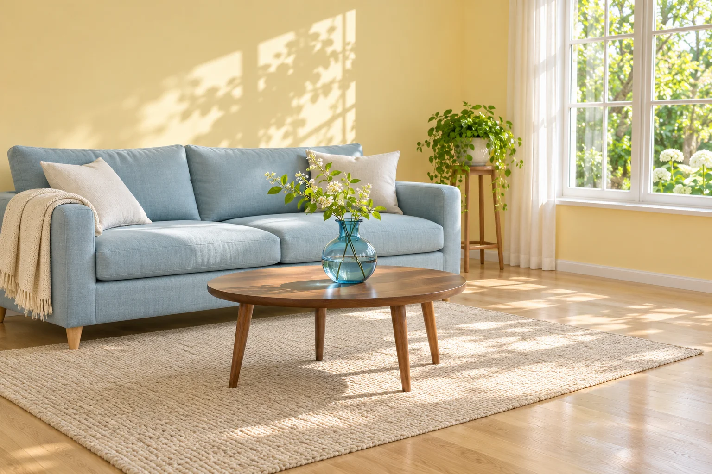

Поддерживающая
Для квартиры, в которой нужно освежить поверхности, убрать пыль и вымыть полы.
от 3 000 ₽
Вернём дому порядок, а вам — свободный вечер. Уберём то, до чего всё время не доходят руки.

Выберите комнату и посмотрите, что входит в базовый сценарий. Дополнительные работы обсуждаем заранее.
Для квартиры, в которой нужно освежить поверхности, убрать пыль и вымыть полы.
Больше времени на труднодоступные зоны и накопившиеся загрязнения. Составляем подробный список.
Убираем строительную пыль и следы работ. Оцениваем поверхности и объём по фотографиям.
Цены иллюстративные. Площадь, состояние квартиры, окна и дополнительные работы меняют итоговый расчёт.
Достаточно убрать ценные вещи и рассказать об особенностях квартиры: питомцах, деликатных поверхностях или комнатах, в которые не нужно заходить.
Сначала согласуем задачу. После уборки пройдёмся по списку вместе — спокойно, без спешки.
Расскажите о квартире и о том, с чем нужна помощь.